ABBA
Kit inicial · v4
Identidade, ativos e presença pública — o documento
para o aval do Pedro e para a agência que assumir depois.
AGOSTO 2026 · ABBASERVICES.COM.BR
O que há neste documento
Sumário
| 03 | A marca — o wordmark limpo e as regras de uso |
| 04 | Cores e tipografia — a paleta e as duas fontes |
| 05 | Ativos digitais — avatar, lockups, banner e capa |
| 06 | Papelaria — cartões nominais e assinaturas de e-mail |
| 07 | Timbrado e kit de produção — documentos e brindes |
| 08 | Perfil LinkedIn da empresa — pronto para publicar |
| 09 | Perfis pessoais e Instagram |
| 10 | A grade-vitrine — os 9 posts de lançamento |
| 11 | Estratégia LinkedIn — os 4 pilares e as regras |
| 12 | Briefing para a agência — o negociável e o inegociável |
| 13 | Checklist de lançamento e pendências dos sócios |
| 14 | Brief para o designer — o refino que pode vir depois |
Tudo aqui deriva da doutrina registrada no repositório interno (posicionamento,
manifesto, identidade visual, plano de redes). Este PDF é o retrato consolidado — os arquivos-fonte editáveis
vivem em 08-materiais/marca/.
ABBA02 · 14
A marca
Só a palavra. Nada mais.
Wordmark limpo (v4, decisão de 2026-08-11): a palavra ABBA em Cormorant Garamond
SemiBold, com 12% de espaçamento entre letras. Sem símbolo, sem ponto, sem tagline — o padrão
das consultorias premium: McKinsey, BCG e Bain são só tipografia. O nome é um palíndromo;
a tipografia carrega a marca sozinha.
As cinco regras
- Nunca recolorir fora das três cores oficiais (navy, dourado, branco). Nunca gradiente, sombra ou contorno.
- Nunca esticar, inclinar ou espelhar.
- Margem de respiro mínima: metade da altura do A em volta de toda a marca.
- Sobre foto: só branco ou dourado, e só se a foto for escura e calma.
- Não recompor a marca em outra fonte — usar sempre os arquivos prontos.
ABBA03 · 14
Cores e tipografia
Navy, dourado e a serifa
Navy · #1B2A4AFundos escuros, títulos sobre claro
Dourado · #C2A35BFiletes, eyebrows, destaques — com parcimônia
Branco · #FFFFFFO fundo padrão do padrão editorial
Ardósia · #5A6472Texto secundário
Gelo · #E8E8E8Divisores e blocos
Regra de contraste: dourado como texto só sobre navy, e só em destaque grande (eyebrow, número).
Sobre branco, o dourado é elemento gráfico — filete, número gigante — nunca texto corrido.
As duas fontes (livres, licença OFL)
| Fonte | Papel |
|---|
| Cormorant Garamond |
A marca e os títulos — display, sempre SemiBold |
| EB Garamond |
Corpo de texto, legendas, tabelas |
Versaletes dourados com espaçamento largo (≥ 0.3em) são a assinatura tipográfica dos eyebrows.
Fallback quando as fontes não estiverem instaladas: Georgia.
ABBA04 · 14
Ativos digitais
Perfis prontos para subir
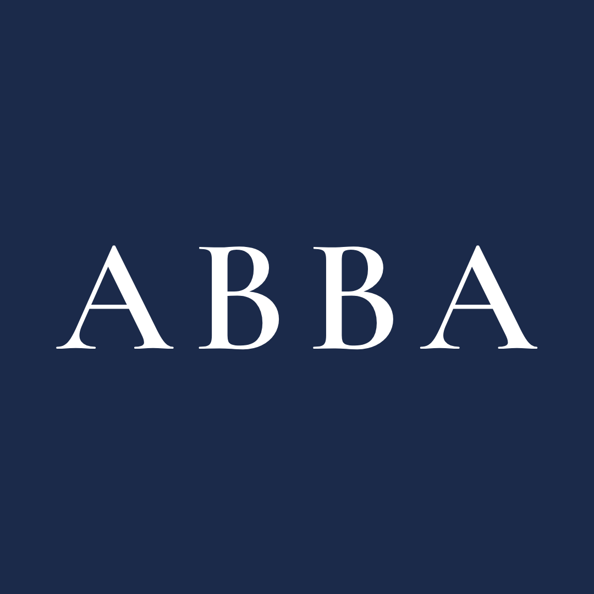
Avatar 1080 — LinkedIn · Instagram · WhatsApp
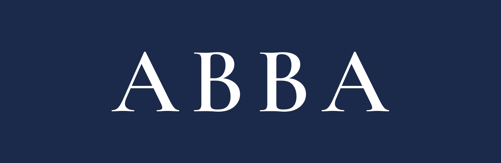
Lockup horizontal escuro
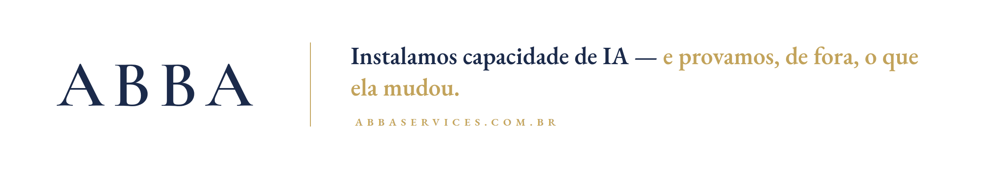
Banner da página LinkedIn (2256×382) — editorial branco com a headline
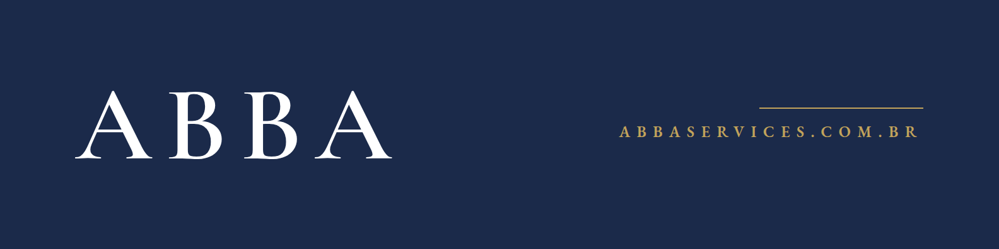
Capa dos perfis pessoais (1584×396)
ABBA05 · 14
Papelaria
Cartões e assinaturas
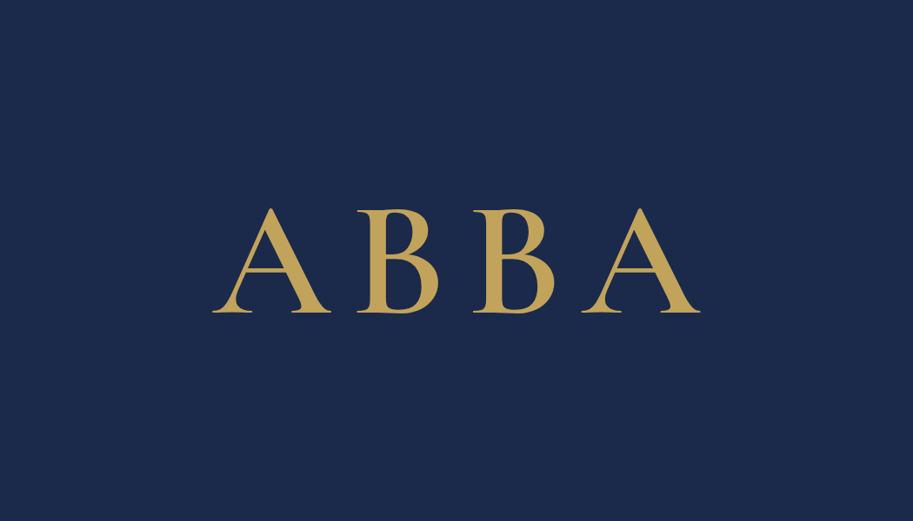
Frente (comum aos sócios)
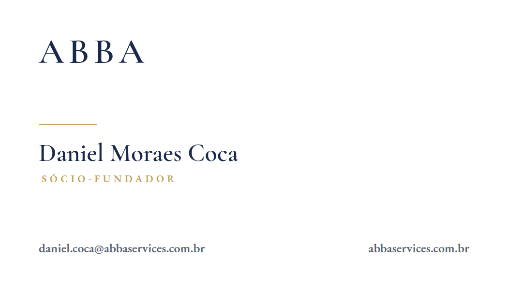
Verso · Daniel
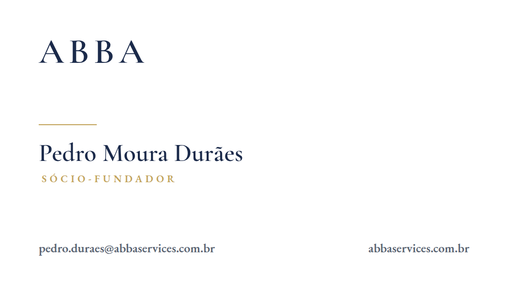
Verso · Pedro
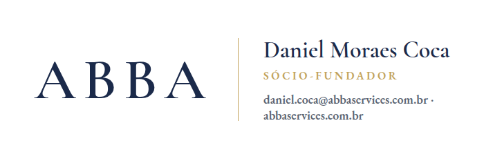
Assinatura de e-mail · Daniel
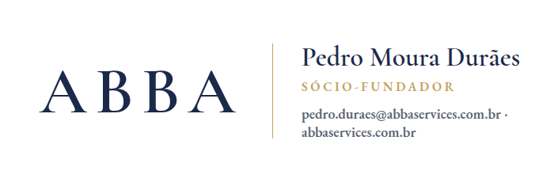
Assinatura de e-mail · Pedro
Formato do cartão: 9×5 cm (arquivos a 300 dpi). Para gráfica, o fornecedor
extrai as curvas do PDF vetorial do kit de produção (página 07).
ABBA06 · 14
Documentos e produção
Timbrado e kit de brindes
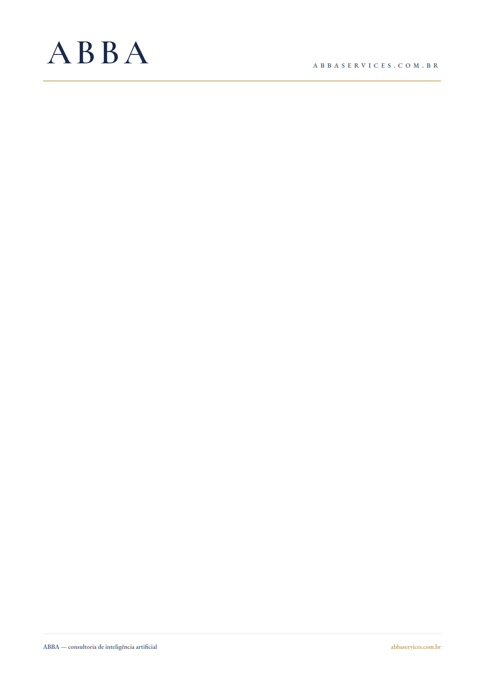
Timbrado A4 — propostas e documentos
O kit de produção (pasta evento/)
O pacote que se manda para qualquer fornecedor de brindes, gráfica ou serigrafia:
- PNGs transparentes em alta resolução, um por cor oficial (azul, dourado, branco) — para impressão, bordado, adesivo e gravação;
- 6 combinações com fundo — as cores entre si, para peças onde o fundo vem do material;
- PDF vetorial (3 páginas) — curvas escaláveis para qualquer tamanho;
- LEIA-ME com códigos de cor (HEX + CMYK), fonte e regras rápidas.
Para gravação a laser, relevo seco ou metal, qualquer arquivo transparente serve — a cor vem do
próprio material. Em brinde premium, a combinação mais forte é dourado sobre navy.
ABBA07 · 14
Presença · LinkedIn
A página da empresa
| Campo | Conteúdo |
|---|
| Nome | ABBA Consultoria de IA |
| Tagline | Instalamos capacidade de IA — e provamos, de fora, o que ela mudou. Consultoria para o mid-market brasileiro. |
| Site | abbaservices.com.br |
| Setor | Consultoria e serviços empresariais · 2–10 pessoas |
| Especialidades | Transformação em IA · Agentes de IA · Avaliação de oportunidades de IA · Capacitação executiva em IA · Governança e LGPD |
| Avatar / capa | oficial/avatar.png · oficial/banner.png |
O texto "Sobre" (canônico)
A ABBA instala capacidade de IA em organizações — e prova, como terceiro, o que mudou.
Não treinamento. Não piloto sem métrica. Não ferramentas. A instalação completa: análise gratuita por
informação pública → avaliação profunda → protótipo validado com dados reais (GO/NO-GO) → construção de
agentes sob medida → capacitação híbrida de todos os níveis → manutenção com presença semanal →
Conselheiro de IA — tudo dirigido pelos objetivos da diretoria do cliente, num ritual permanente de
alinhamento. Atendemos empresas brasileiras de médio porte.
Comece pelo Mapa de Vazamento: uma análise gratuita da sua empresa, feita por informação pública,
entregue em 48 horas. Peça em contato@abbaservices.com.br.
ABBA08 · 14
Presença · sócios e Instagram
Perfis pessoais e o Instagram
Perfis pessoais (Daniel e Pedro)
Headline pronta: Sócio-fundador, ABBA · Consultoria de transformação em IA para o mid-market
brasileiro · Instalamos os 70% que todo fornecedor de IA ignora.
Estrutura do "Sobre" (1ª pessoa, 5 blocos): a tese em uma frase · o que a ABBA faz em 2 frases ·
trajetória com 2–3 marcos reais [preencher — prioridade] · a divisão de chapéus
(Daniel: comercial, entrega, financeiro; Pedro: capacitação e tecnologia) · CTA do Mapa de Vazamento.
Capa: oficial/capa.png. Foto: real, fundo limpo, luz natural — nunca avatar de IA.
Instagram (presença-vitrine)
| Campo | Conteúdo |
|---|
| Handle | @abba.consultoria — verificar disponibilidade (alternativas: @abbaconsultoria, @abba.ia) |
| Nome | ABBA · Consultoria de IA |
| Bio | Instalamos capacidade de IA — e provamos o que mudou. Consultoria para empresas de médio porte. ↓ Mapa de Vazamento gratuito |
| Destaques | Método · Perguntas · Quem somos (capas navy + detalhe dourado) |
Decisão registrada: o Instagram é vitrine — o esforço recorrente fica no LinkedIn.
ABBA09 · 14
Presença · Instagram
A grade-vitrine: 9 posts prontos
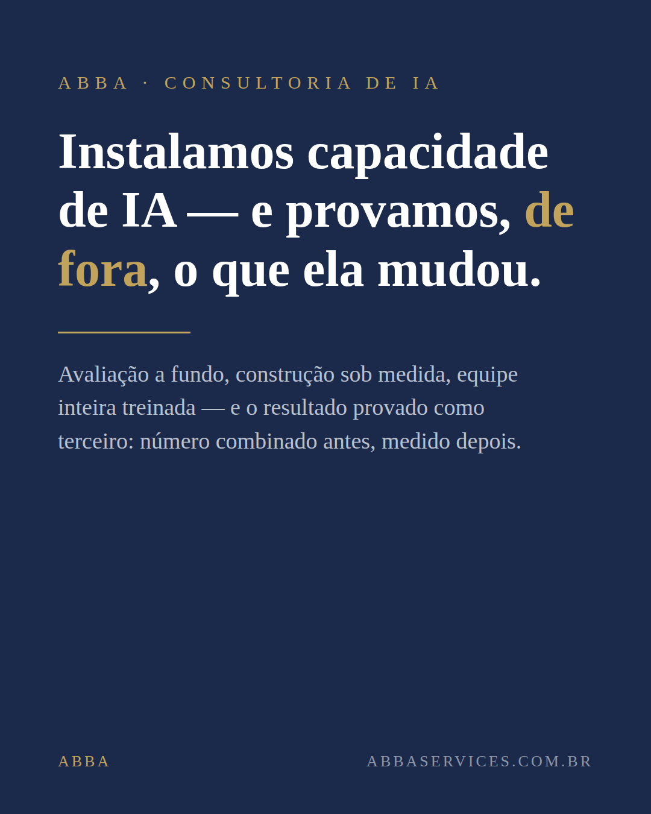
1 · A headline
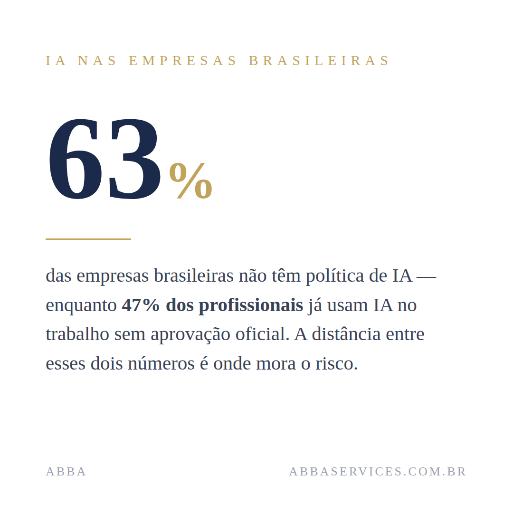
3 · Número com fonte
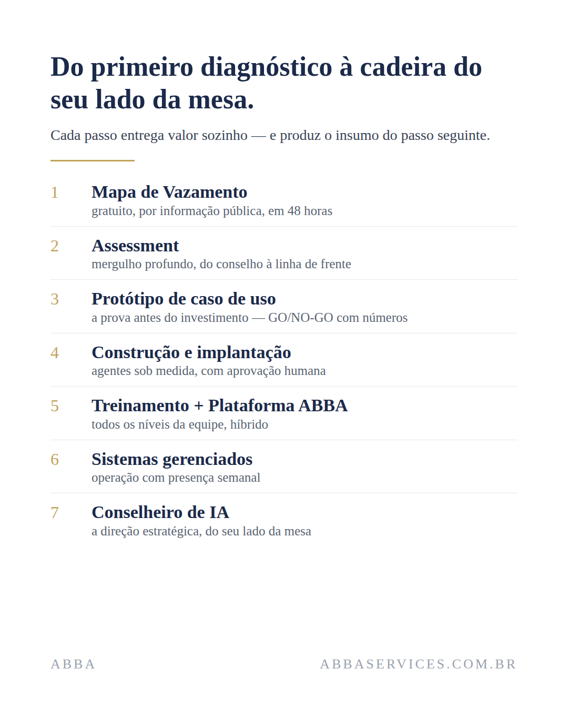
6 · A jornada em 7 passos
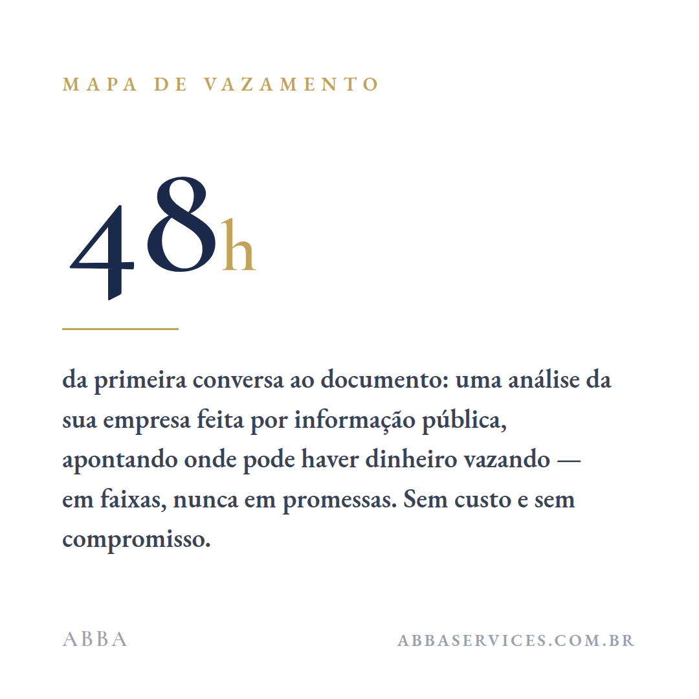
7 · 48 horas
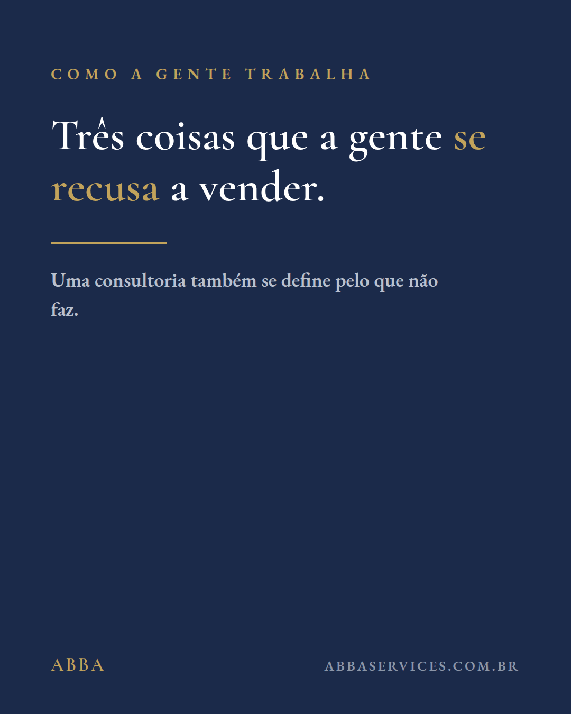
8 · Carrossel recusas
9 · CTA Mapa de Vazamento
16 quadros no total (posts 4 e 8 são carrosséis). Publicar em 3 lotes de 3; legendas prontas no plano
de redes. Sem obrigação de cadência depois — a grade existe para o perfil nunca parecer um deserto.
ABBA10 · 14
Presença · LinkedIn
Estratégia de conteúdo
Cadência: 2 posts por semana no total (1 por sócio); a página republica. Constância vale mais
que volume. Todo post pertence a um dos 4 pilares — se não pertence, não publica:
| Pilar | O que é | Assina |
|---|
| A · Prova, não impressão | O método: número combinado antes, medição depois, registro | Daniel |
| B · As perguntas que doem | Perguntas de diagnóstico que o dono não se fez | Pedro |
| C · O calendário que não espera | Regulação e mercado com data: ANPD, LGPD, PL 2338 | Daniel |
| D · Como a gente trabalha | Bastidores honestos: anatomia de uma Análise, as recusas | Os dois |
As regras que valem mais que o calendário
- Linguagem de dono, sem jargão de tese: "você vai saber, em reais, o que cada decisão de IA rendeu — assinado."
- Nenhum cliente nomeado e nenhum case até existir caso publicável aprovado.
- Post de sócio > post de página — a página dá lastro e recebe o clique.
- CTA sempre o mesmo: Mapa de Vazamento gratuito. Um funil, uma porta.
- Sem emoji, sem "jornada", sem superlativo sem número; número só com premissa citada.
Primeiro post recomendado (pilar D, os dois sócios): "por que existimos" — a tese de que ninguém
combinou antes o que seria dar certo, e o compromisso de publicar a anatomia de uma Análise real.
ABBA11 · 14
Briefing
Para a agência que assumir
Entregar este documento + manual de marca, posicionamento e manifesto. O resumo do que pode e do que
não pode mudar:
Inegociável (doutrina — muda só com decisão registrada dos sócios)
- Headline e prateleira: "camada independente de prova, com músculo de execução"; "auditoria" só como analogia.
- Tabela de vocabulário; pt-BR; sem emoji, sem "jornada", sem superlativo sem número.
- Paleta navy+dourado e o wordmark ABBA limpo (v4); domínio único abbaservices.com.br; e-mail único contato@.
- Zero clientes inventados; número só com premissa; o que deu errado se publica na mesma tipografia do que deu certo.
- CTA único: Mapa de Vazamento.
Aberto (a agência pode propor)
- Cadência, formatos (vídeo, newsletter), distribuição paga.
- Refinamento profissional do logo (grid, ajuste óptico, tipografia proprietária).
- Setor-farol de fachada comercial, playbook de WhatsApp, site institucional.
Lacuna registrada: o playbook de WhatsApp — no mid-market brasileiro a venda acontece lá; é o
candidato natural à v2 do plano de redes.
ABBA12 · 14
Execução
Checklist de lançamento
- Aval do Pedro: headline, marca v4 e este documento.
- Criar a página LinkedIn (pág. 08) → conferir preview em desktop e mobile.
- Atualizar os dois perfis pessoais — headline + capa no mínimo; "Sobre" quando as trajetórias estiverem escritas.
- Criar o Instagram e publicar a grade-vitrine em 3 lotes (3 posts/semana).
- Primeiro post dos sócios no LinkedIn; a página republica.
- Adicionar os links das redes na assinatura de e-mail e nos materiais enviáveis.
- Registrar handles e senhas no cofre — nunca em git.
Pendências que só os sócios destravam
- Fotos profissionais dos dois (real, fundo limpo, luz natural).
- Bios com trajetória real (2–3 marcos com nome e ano) — o ataque mais barato de um concorrente é sócio sem bio.
- Aval do Pedro na headline e na menção pública a João Moura / CrewAI.
- Escolha e reserva do handle de Instagram.
- Decisão sobre setor-farol antes de publicar.
ABBA13 · 14
Evolução
Brief para o designer
A marca v4 é utilizável hoje. Quando houver orçamento, um designer tipográfico pode elevar o acabamento
sem mudar a decisão. Escopo do refino:
- Kerning óptico do wordmark — ajustar par a par (A·B, B·B, B·A) em vez do espaçamento uniforme de 12%.
- Versão em curvas — converter o wordmark final em vetor próprio (deixar de depender da fonte instalada).
- Grid de construção e área de proteção formalizados em página de manual.
- Teste de redução — garantir leitura perfeita em 24 px (favicon, avatar pequeno).
- Opcional: dígrafo/monograma "A" para favicon, derivado do próprio wordmark.
Referências do padrão (pesquisa registrada)
- Consultorias premium usam wordmark puro — McKinsey, BCG, Bain: só tipografia, sem símbolo.
- O clichê a evitar: cérebro de pontos conectados e circuitos — o logotipo nº 1 mais saturado em IA.
- A identidade está no contraste navy + dourado + serifa humanista, não em um pictograma.
Arquivos-fonte: 08-materiais/marca/ (oficial/, evento/, fonts/, grade e
templates). Este documento: abba-kit-inicial.pdf, gerado de kit-inicial-v4.html.
ABBA14 · 14